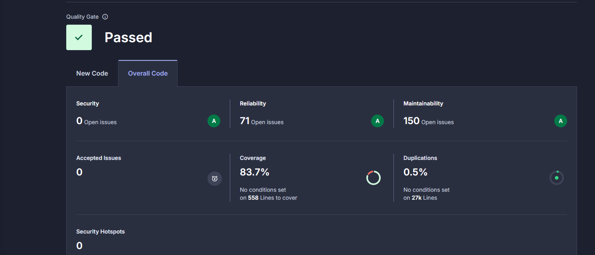
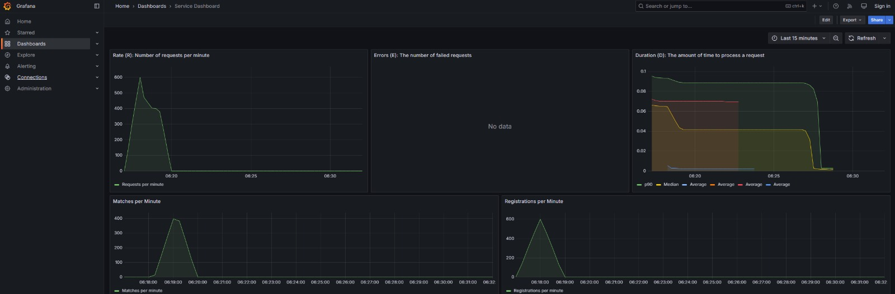
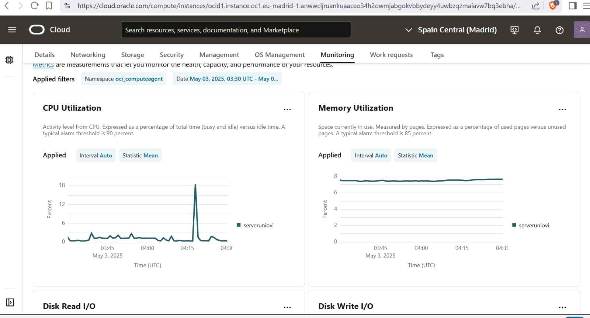

About arc42
arc42, the template for documentation of software and system architecture.
Template Version 8.2 EN. (based upon AsciiDoc version), January 2023
Created, maintained and © by Dr. Peter Hruschka, Dr. Gernot Starke and contributors. See https://arc42.org.
1. Introduction and Goals
1.1. Introduction
WIChat is a project that, following the path of the application developed in the past by the HappySw company, seeks to implement top-notch technologies to take the user experience to the next level when playing this online version of the famous quiz show “Saber y Ganar”. The project is developed by the company ChattySw, and the development team consists of the following programmers:
2. Team Members
-
Pelayo García Varela
Correo: UO294381@uniovi.es
GitHub: ElPandaP -
Pablo Pérez Álvarez
Correo: UO294197@uniovi.es
GitHub: latiose -
Héctor Hernández Iglesias
Correo: UO296095@uniovi.es
GitHub: HernandezIglesiasHector -
Lucas Gisbert López
Correo: UO295526@uniovi.es
GitHub: LucasGisb
2.1. Requirements Overview
To achieve this enhanced application experience, its main functionalities are:
-
User Registration and Participation History: Each user will have a personal account where their game data will be stored, allowing them to view their progress at any time.
-
Question and Answer System based on Wikidata: The various questions, accompanying images, and answer options will be generated based on information gathered from Wikidata.
-
Chatbot and Hint System: The user will have the optional functionality of a chatbot that, upon request, will provide a series of hints based on information retrieved from Wikidata, guiding them towards the correct answer without revealing it outright.
-
User Interaction with the Application: The user will interact with the application through a highly intuitive and user-friendly web front-end.
2.2. Quality Goals
The top three (max five) quality goals for the architecture whose fulfillment is of highest importance to the major stakeholders. We really mean quality goals for the architecture. Don’t confuse them with project goals. They are not necessarily identical.
Consider this overview of potential topics (based upon the ISO 25010 standard):

You should know the quality goals of your most important stakeholders, since they will influence fundamental architectural decisions. Make sure to be very concrete about these qualities, avoid buzzwords. If you as an architect do not know how the quality of your work will be judged…
A table with quality goals and concrete scenarios, ordered by priorities
| Quality Goal | Description |
|---|---|
Usability |
The interface should be intuitive and user-friendly to ensure the user can navigate the application optimally. |
Performance |
The system should deliver responses within an acceptable time frame to ensure fast and efficient game sessions. |
Accuracy |
The hint generation mechanism should minimize errors and hallucinations to maximize the chatbot’s functionality. |
Scalability |
The architecture should allow easy updates and feature expansions, making it adaptable for future improvements. |
Security |
Because user well-being and comfort are of paramount importance, user data and interactions must be properly managed and protected. |
2.3. Stakeholders
| Role/Name | Description | Expectations |
|---|---|---|
RTVE |
The client commissioning the development of the updated application. |
Get a fully functional app that enhances the existing one by using AI Chat bot. |
ChattySw |
The software development company responsible for taking the project. |
Being able to meet the client’s needs on time and without any inconvenience. |
API providers |
WikiData and LLM Service. |
The external service providing information and the LLM for hint generation. |
Final users |
General players who will use the WIChat application for entertainment and learning. |
Being able to use the application without any impediment and enjoy and learn thanks to it. |
Development team |
The team responsible for developing the application, consisting of the previously mentioned members. |
Develop the application and improve their communication and teamwork skills, taking a step forward toward their professional future. |
Evaluators (Teachers) |
The people who will oversee and evaluate the application and its correct development. |
Keep track of project development, resolve development team issues, and evaluate the final product. |
3. Architecture Constraints
3.1. Technical Constraints
| Constraint | Explanation |
|---|---|
Deployed Web application |
The application must be deployed on a server and accessible from a browser. In this case, we will use Docker to deploy it. |
Wikidata |
The application will use Wikidata as it will serve as the source of the information displayed in a match’s questions. |
LLM |
The user will be able to obtain hints via a LLM Chatbot. |
Documented API |
Alongside with the application, a public API will be provided, with its extensive documentation, which will provide access to users information. |
Data management |
In order to store and manage the information regarding users and matches, it will be kept in a MongoDB database. |
Tests |
The application must pass a series of tests in order to ensure its functionality; failure of any test will block deployment. |
GitHub |
We will use GitHub for version control and collaboration on the project. |
Documentation |
The documentation of the entire project will be done following the Arc42 template for better clarity in its details and explanations. |
3.2. Organizational Constraints
| Constraint | Explanation |
|---|---|
Team of 4 people |
The work will be distributed among the 4 members of the group. |
Reports |
Every week during the class practice time, we must write minutes documenting what we have done and the next steps to follow. |
Issues |
The work assigned to each member will be reflected as issues in GitHub, so that everything is recorded and everyone knows what they have to do. |
Pull requests |
In order to improve the workflow and our code consistency, every time a member is about to integrate their work into the main one, another member will review its changes via a Pull Request, requesting changes if seen as necesary. |
Mid-term evaluations |
Every 3 weeks the project will be checked, and corrections that need to be made for the upcoming days will be noted. |
3.3. Conventions
Constraint |
Explanation |
Arc42 |
The team will follow the Arc42 template in order to structure the project documentation in a consistent and efficient way. |
Use of English |
English will be used throughout the project, including documentation, coding, and the GitHub repository, as it is the most widely accepted and understood language in the software development community. |
Good coding practices |
The team will adhere to clean code principles such as meaningful naming, modularity, simplicity, and comprehensive documentation. |
Branchs usage |
The team will adopt a branching strategy, keeping every issue in its own branch until it is brought to master via a Pull Request. |
Wichat is a trivia-like game that retrieves information from Wikimedia and uses it to ask users questions accompanied by images. It also features its own trained AI chatbot to assist users by providing hints.
4. Context and Scope
4.1. Business Context
| Communications | Ins | Outs |
|---|---|---|
User |
Interactions with the application |
Responses to said interactions. |
Wichat |
WikiData information, hints and user information |
Various information received from the APIs and the database. |
Wikidata |
Requests by the application |
Responses to said requests with the information stored in Wikidata. |
Database |
Requests by the application |
Stores users information and returns it whenever it is needed |
AI chat bot |
Questions by the user |
Responses in text format with hints about the user’s question, from Empathy. |
4.2. Technical Context
| Service | Description |
|---|---|
WebApp |
The main web application that serves as the user interface. It communicates with the user agent (browser) to send and receive requests. |
GatewayService |
Central API gateway responsible for routing requests from the frontend to internal backend services. |
LLMService |
Service that generates language-based hints by consuming the external Empathy API. |
AuthService |
Manages user authentication and session handling. It interacts with MongoDB to validate credentials and store tokens. |
UserService |
Handles user creation and management, including storing user data in MongoDB. |
UserInfoAPI |
Provides an API for retrieving user data, primarily used by external API clients. Reads data from MongoDB. |
QuestionService |
Generates quiz or trivia questions using data fetched from the external WikiData API. |
GameService |
Stores game sessions in MongoDB. |
MongoDB |
Internal database that stores persistent data including users, sessions, and game states. |
5. Solution Strategy
5.1. Technological decisions
-
JavaScript: Primary programming language for both frontend and backend development in our project. Fit for full-stack development using a single language, reducing context switching.
-
React: JavaScript library for web and native user interfaces. It allows developers to create interactive web applications by breaking down the UI into reusable components. React uses a declarative approach to efficiently update and render components, resulting in faster and more maintainable code. It’s widely adopted in the industry due to its simplicity, performance, and robustness.
-
Node.js: JavaScript runtime that enables running JavaScript code outside of web browsers. It’s renowned for its event-driven architecture and extensive collection of packages, making it ideal for building scalable server-side applications.
-
Express: Lightweight framework for Node.js used to build RESTful webs and APIs. Especially useful for the backend development and routing.
-
MongoDB: popular NoSQL database known for its flexibility and scalability. It stores data in flexible JSON-like documents and is widely used in modern web development for its simplicity and ability to handle large volumes of data.
-
Wikidata: Wikidata provides a REST API for retrieving information related to any topic. It helps us to dynamically generate questions for our game using it from any programming language.
-
LLM Empathy: LLM model chosen because, in addition to already having an API key for it, it is especially easy to integrate into the application and works more than correctly to meet the needs of the Chatbot.
-
Arc42: framework (template) used for documenting and communicating software architectures. It provides a template for describing the architecture of a software system, covering aspects such as stakeholders, requirements, architecture decisions, components, interfaces, and quality attributes. arc42 helps teams create consistent and comprehensible architecture documentation, enabling better communication, understanding, and maintenance of software systems throughout their lifecycle.
-
Swagger: toolset for designing, building, documenting, and consuming RESTful web services. It allows us to automatically generate interactive API documentation, making it easier for developers to understand and test API endpoints. Swagger improves the transparency, usability, and maintenance of our backend services by ensuring clear and standardized API definitions.
-
npm: default package manager for Node.js, providing a command-line interface to install, manage, and publish JavaScript packages. With over a million packages available in its registry, npm simplifies adding functionality to Node.js projects by handling dependencies and providing tools for versioning and publishing packages.
-
Oracle server: Cloud platform used for deploying our application. The team chose Oracle Cloud Infrastructure due to prior experience with its services, which allowed for a smoother and more efficient setup. It provides a reliable environment for hosting our backend, database, and other infrastructure components, supporting scalability and high availability for the game.
-
Docker: platform that will be used for deploying our services inside containers. Containers are lightweight, portable, and self-sufficient units that contain everything needed to run an application, including the code, runtime, system tools, libraries, and settings. Docker enables developers to package their applications along with all dependencies into containers, ensuring consistency across different environments, such as development, testing, and production.
-
GitHub Actions: built-in automation tool on GitHub that allows us to automate some workflows that are triggered after some specific github branches actions at development. It provides as continuous integration of the game functionality.
-
GitHub: Version control and project management platform used for managing our game project. GitHub provides features for collaboration, issue tracking, and code review, facilitating efficient development workflows and team communication.
5.2. Architecture & Design
-
Services based project: Although not a full microservices architecture, our project is designed in a modular and service-oriented way. Each major functionality is isolated into separate logical units or services that can be developed and maintained independently. This enhances flexibility and maintainability without the complexity of full microservice infrastructure.
-
Containerization with Docker: We leverage Docker containerization to package each service and its dependencies into lightweight, portable containers. Docker provides a consistent environment across different stages of the development lifecycle, ensuring seamless deployment and scalability. With Docker, we can easily spin up new instances of services, manage dependencies, and streamline our development and deployment workflows.
-
API Gateway: We employ an API gateway as a centralized entry point for all client requests to our services. The API gateway serves as a reverse proxy, routing incoming requests to the appropriate service based on predefined rules and policies. It provides a unified interface for clients, abstracting the complexity of the underlying system and improving performance, scalability, and security.
5.3. Team Organization
For developing this project we are using Github as the control version systems. The master branch contains the final version of the product, so that every accepted pull request to master branch will be considered as a new release.
-
Documentation: it must be always updated for making our work valuable and consistent.
-
Weekly meetings: Weekly discussions about what has been done and what needs to be done will be key for our team success.
-
Github: this control version systems not only allows us to share and collabortively write code, but also provides other resources such as issues and project management (kanban board) tools for organizing the work to be done. Also, wiki section allows us to save all of our minutes from each scheduled meeting.
-
Whatsapp and Discord: Allow us to be in constant communication for helping each other out whenever needed.
6. Building Block View
6.1. 5.1 Whitebox Overall System
At this level, Wichat is presented as a single building block (whitebox) that interacts with external actors and systems. It serves as the central unit responsible for generating trivia questions, managing gameplay, and assisting users with the help of an AI chatbot.
Wichat communicates with the following external entities:
-
User: The player interacts with the application via a browser interface. Users receive questions, provide answers, and can request hints through the UI.
-
Wikidata API: Wichat sends SPARQL queries to Wikidata to get structured data used for generating trivia questions.
-
Empathy AI Bot: An external AI service that receives user queries (e.g., help or hints) and returns context-aware suggestions to support the player during the game.
This level provides a high-level understanding of Wichat’s role in the system landscape and lays the foundation for further decomposition in Level 2, where internal components and logic are revealed.
6.2. 5.2 Internal funcionality
The system consists of the following top-level components:
-
User Interface (UI): Developed in React, it handles all user interactions and displays the game content.
-
Game Service: Manages the game data in database.
-
Question Generator: Gets data from Wikidata and formats it into quiz questions.
-
Llm Service: Interfaces with an AI-based hint bot to provide context assistance.
-
User Management: It is responsible for user registration, users sessions and information about user historical.
6.2.1. 5.3.1 Empathy Connector (LLM Service)
The Empathy Connector encapsulates the logic for communicating with external LLM APIs (EmpathyAI) to generate context-based hints. This module is exposed as a RESTful service and relies on a structured flow of request transformation, API communication, and response handling.
Components:
-
ContextBuilder: Constructs the full context prompt with game question and answers, including rules and examples.
-
LLMRouter: Core orchestrator that handles selection of the appropriate LLM (Empathy), builds the request, and sends it to the external API.
-
LLMAPI: external API that handles the raw response.
Flow:
-
ContextBuilder injects the question/answers into a prompt with behavioral rules.
-
LLMRouter chooses the configured model and prepares the API request.
-
There is a request to the external API and receives a response.
-
The response is parsed and returned to the client as a concise hint.
Models Supported: - EmpathyAI (Qwen and Mistral)
6.2.2. 5.3.2 Question Generator

The Wikidata Question Service encapsulates the logic for generating trivia questions in various categories (capitals, sports, cartoons, and birds) using data obtained from Wikidata. This service is exposed as a RESTful API, and its workflow involves making SPARQL queries to Wikidata, processing the data, and returning dynamic questions.
Components:
-
Data Model (Mongoose): Uses MongoDB to store the generated questions. The Question model manages the questions and answers for each category.
-
Question Cache: Maintains an in-memory cache for the questions by category, updating them every hour if necessary.
-
SPARQL Queries (Axios): SPARQL requests are made to Wikidata to fetch the necessary data for generating questions and answers.
-
Recently Used Questions: Tracks questions that have been shown to the user, preventing repetition in a short time frame.
Flow:
-
If questions for the requested category are available in the database, one is randomly selected. If not, new questions are generated by querying Wikidata.
-
The generated questions are stored in the database and the category’s cache.
-
The system ensures that questions are not repeated by tracking which questions have been used recently.
-
A random question is selected and returned to the client, along with multiple-choice answers and an optional image.
MongoDB schema:
Question:
| Field | Description |
|---|---|
|
The question text shown to the user. |
|
An array of possible answers. Each answer is an object described below. |
|
(Optional) URL to an image related to the question. |
|
A label indicating the thematic category of the question. |
Answer Subdocument:
| Field | Description |
|---|---|
|
Boolean value indicating whether the answer is correct. |
|
The content of the answer. |
|
Boolean flag to track whether the user selected this answer (used at runtime). |
Supported Categories:
-
Capitals: Questions about the capitals of countries.
-
Sports: Questions about sports teams, specifically football.
-
Cartoons: Questions about cartoon characters.
-
Birds: Questions about bird species
6.2.3. 5.3.3 User Management

In the user management we do everything about users data and sessions.
Components:
-
Auth Service: It’s used to manage the user’s session in /login
-
User info Api: It takes the users data from game in database
-
Users service: It manages the new users
MongoDB schema:
Session:
| Field | Description |
|---|---|
|
The user’s unique identifier or name (stored as a string). |
|
The user’s hashed password (stored as a string). |
|
The timestamp indicating when the user account was created. |
6.2.4. 5.3.4 Game Service
The game Service is in charge of saving the match historic. The exposed route is /addMatch.
Flow
-
Store Question and Answer:
-
The question and selected answers are stored in the database.
-
-
Update User Statistics:
-
User statistics are calculated based on the correct and incorrect answers and the time spent on the match.
-
The final score is calculated using the match’s difficulty, correct and incorrect answers, and saved in the Match model.
-
-
Retrieve User Statistics and Matches:
-
The client can make GET requests to /userStatistics and /userMatches to get the user’s statistics and matches, respectively.
-
MongoDB schema:
Matches:
| Field | Description |
|---|---|
|
Name of the user who played the match. |
|
Date and time the match was played. |
|
Game difficulty level: |
|
Final score obtained in the match. |
|
Total time (in seconds) taken to complete the match. |
|
Array of question objects used in the match (described below). |
Questions:
Each question includes text and a list of possible answers.
| Field | Description |
|---|---|
|
Question prompt shown to the user. |
|
List of answer options (see next table). |
Answers:
| Field | Description |
|---|---|
|
Text content of the answer option. |
|
Boolean indicating if this is the correct answer. |
|
Boolean indicating if the user selected this answer. |
6.2.5. 5.3.5 Gateway
Gateway serves as the central entry point for all client requests. Its main purpose is to orchestrate communication between different services, simplifying and unifying access to your backend system.
-
API Aggregation: Combines multiple services (authentication, game logic, user management, LLM, Wikidata) under a single API, so clients don’t need to call each one individually.
-
Routing: Forwards incoming HTTP requests to the appropriate internal service (e.g., /login goes to Auth Service, /addMatch goes to Game Service).
-
Simplifies Client Logic: The frontend only communicates with one service (the Gateway), instead of interacting with each backend service separately.
-
Monitoring: Integrates Prometheus metrics to monitor endpoint usage and performance.
-
Error Handling: Standardizes error responses from all internal services before returning them to the client.
6.3. Registering an user
Scenario 1: Registering as a new user or log in as an existing user.
When a new user registers, the process starts on the front end, where they enter their details. The front end then sends this information to the back end, which validates it, ensuring, for example, that the username isn’t already taken and meets minimum length requirements. Once the data is verified, it is stored in the database, then the user is finally notified that their account has been succesfully created and they can low log in.
6.4. Logging in
When it comes to logging in, the user firstly enters their credentials, then the back end retrieves the user’s information from the database and verifies if it’s correct.
6.5. Questions generation
The user accesses the game, selects its mode and difficulty, and the call is made. The backend is responsible for obtaining the questions (along with their images and answers) and transmitting them to the frontend.
6.6. WiChat quiz game
The user enters the game, selects the mode and difficulty, and once the question is answered, the user begins the game, answering each question until the timer runs out, ending the game. After the game ends, and after the information has been saved, the user can replay the game or access other views.
6.7. Obtaining hints via Chatbot
In the Game view, the user types their questions into the Chatbot component, which are then sent to the LLM, where the prompt to be passed to the AI is configured and the response is generated, which is then returned to the frontend for the user to view.
6.8. Leaderboard and match search
When the user accesses the Leaderboard, the system loads ranking and user data, while also allowing the user to search for specific user’s games by entering its name in the search bar.
7. Deployment View
7.1. Infrastructure Level 1
7.1.1. Motivation
The deployment diagram provides a clear overview of the system’s architecture, illustrating how its components interact and are distributed. It helps visualize the structure within a Dockerized environment, showing the connections between the web server, database, external APIs, and client. This diagram makes it easier to understand how services are organized and integrated, providing an accessible overview for development, operations, and management teams.
7.1.2. Quality and/or Performance Features
-
Containerized deployment ensures environment consistency across development, staging, and production environments. All services—such as authservice, userservice, gatewayservice, and gameservice—run inside Docker containers, ensuring parity across all deployment stages and simplifying testing and debugging.
-
Lightweight Docker containers enable rapid scalability. Each service can be deployed or updated independently, allowing faster delivery cycles and horizontal scaling with minimal manual intervention.
-
Decoupling of backend from external APIs, such as Wikidata and Empathy, improves maintainability. Since services like questionservice and llmservice interact with these APIs via well-defined interfaces, they can be updated or replaced without impacting core infrastructure—enhancing resilience and reducing downtime risk.
-
Stateless backend services (like authservice, llmservice`, gameservice) allow for horizontal scaling. Because user state is stored in MongoDB, new instances of services can be added seamlessly to manage load spikes, ensuring reliable performance under high demand.
7.1.3. Mapping of Building Blocks to Infrastructure
The application is deployed in a fully Dockerized environment, with each service fulfilling a specific role within the system. The infrastructure is composed of:
-
Frontend (WebApp): The webapp provides the user interface and communicates with the gatewayservice. It handles user interactions and routes requests to the backend. It’s designed to be scalable and decoupled from the logic layer.
-
API Gateway: The gatewayservice acts as the central point of entry to backend services. It handles request routing, service discovery, and authentication, forwarding requests to userservice, authservice, gameService, userinfoapi, llmservice, or wikidata as needed.
-
Backend Services:
-
authservice: Handles authentication and session management.
-
userservice: Manages user registration and profile data.
-
userinfoapi: Exposes user data to external consumers.
-
llmservice: Connects to the Empathy API to generate empathetic hints.
-
wikidata: Interfaces with the Wikidata API to retrieve factual information.
-
gameService: Manages the matches data.
-
-
Database Layer: A centralized MongoDB instance provides persistent storage for users, sessions, and game data. All services needing storage interact through this database.
-
Client-Server Communication: Users access the system via a browser (webapp), which communicates with the gatewayservice. From there, requests are routed to internal services depending on their nature (authentication, game interaction, user info, etc.).
-
Backend-API Communication: The llmservice and wikidata services interact with external APIs, enabling integration with third-party data sources and AI-based services.
-
Scalability and Resilience: The container-based approach enables scalable deployment of individual services. If load increases, instances of services can be added independently. This architecture supports high availability, rapid recovery, and efficient resource usage.
In summary, the system architecture follows modern cloud-native best practices, ensuring high performance, maintainability, scalability, and fault tolerance. It is well-suited for dynamic environments where flexibility and uptime are critical.
The port in which service is launched are the followings:
| Service | Exposed Port |
|---|---|
mongodb |
27017 |
authservice |
8002 |
userservice_ |
8001 |
userinfoapi |
8005 |
llmservice |
8003 |
gatewayservice |
8000 |
webapp |
3000 |
gameservice |
8004 |
wikidata |
3005 |
8. Cross-cutting Concepts
8.1. Domain concepts
Class |
Explanation |
User |
The people using the application, playing matches and generating statistics of their own. |
Statistics |
Given the performance of the player in its matches, relevant information is stored. |
Match |
Created when the user starts a game and includes its general information and generated questions. |
Question |
Questions spawned in a match, storing all its answers. |
Answer |
Every answer associated to a match’s question, saving if it was the correct option and if was selected by the player. |
8.2. "Under-the-hood"
-
Backend: The server-side logic of the application is implemented using Node.js in combination with the Express framework. The backend handles client requests, communicates with external services such as Wikidata and Empathy, manages user sessions, interacts with the database and other functionalities.
-
Frontend: The frontend is developed using React, a component-based JavaScript library that enables the creation of dynamic and interactive user interfaces. The frontend is responsible for rendering the game interface, managing user input, and presenting questions, hints, and scores.
-
Database and persistence: MongoDB serves as the main data store, offering a flexible document-oriented model that aligns well with the evolving structure of game data. It stores user profiles, game progress, generated questions, and historical results in JSON-like documents.
-
LLM Integration: We utilize Empathy, a Large Language Model (LLM), to enhance the gameplay experience by generating intelligent and context-aware hints for each question in real time.
-
External Data Source: To keep the game content rich and dynamic, we integrate Wikidata as our primary external knowledge source. Through its public REST API, we query up-to-date and structured information about a wide range of topics. This enables automatic generation of questions based on real-world data.
8.3. Development concepts
-
Continuous integration and development Our way of working with github is having one developing branch towards which all pull requests are done and have to be reviewed by at least one team member. Sonar Cloud is set up so we know the testing coverage and whether we pass the quality gate with every pull request. Once there is enough change in the develop branch with respect to the main one and it has enough quality we can merge them and make a release.
-
Testings One of the most important aspects is testing our application, and to achieve this, we will conduct different types of tests. On one hand, we will perform tests such as unit testing and usability testing. On the other hand, we will implement a continuous testing system using GitHub Actions, ensuring that all commits pass the required tests.
-
Docker Docker is used to ensure consistent environments across development, testing, and deployment. By containerizing the application, we can avoid issues related to local setup differences and dependency mismatches.
-
GitHub Actions GitHub Actions is integrated into our repository to automate key parts of the development lifecycle. We use it for continuous integration (CI), running automated tests on every push or pull request, and checking code quality with SonarCloud. Additionally, it supports continuous deployment workflows by enabling the automatic building and deployment of Docker containers when changes are merged into the main branch.
8.4. Operational concepts
-
Gateway service routing We will use a speciallized service that will route the requests to the corresponding service, acting as a single entry point for the application. Requests to the services are much simpler as only the api base endpoint and the action needs to be known and the gateway can also act as a filter to manage requests conditionally if needed. This approach also favors security as we can control which requests are actually sent based on its content or the context of the app.
8.5. Safety and security concepts
-
Secure storage User passwords are never stored in plain text. Instead, secure hashing algorithms and encryption techniques are employed to protect sensitive information and prevent unauthorized access.
Security redirections The app redirects you to the login page if you try to access features that requires you to be logged while you are not.
9. Architecture Decisions
9.1. ADR 001: Key Initial Architecture Decisions
Status: Accepted :date: 23/02/2025
9.1.1. Context
At the very beginning of the project, it was necessary to establish a strong technological foundation. These initial decisions were made based on team expertise, project requirements, and the need for scalability, maintainability, and efficient development practices.
9.1.2. Decision
The following initial architectural decisions were made:
-
Frontend: React
-
Backend: JavaScript with Node.js and Express (see ADR 003: Adoption of TypeScript and Tailwind CSS)
-
Database: MongoDB (see ADR 002: Database Choice - MongoDB)
-
Deployment: Docker
9.1.3. Reasoning
-
React provides a robust, component-based framework ideal for building dynamic and scalable user interfaces.
-
JavaScript/Node.js and Express ensures full-stack JavaScript development, simplifying the technology stack and improving development efficiency.
-
Docker offers containerization, enabling consistent deployment across different environments and simplifying the CI/CD process.
9.1.4. Consequences
-
Unified technology stack using JavaScript for both frontend and backend.
-
Simplified developer onboarding and cross-functional collaboration.
-
Easier scaling and deployment of applications thanks to containerization.
-
Requires team members to be familiar with Docker and container management best practices.
9.2. ADR 002: Database Choice - MongoDB
Status: Accepted :date: 23/02/2025
9.2.1. Context
A flexible, scalable database was needed to manage our data efficiently. The project demands agility to handle evolving data structures, rapid development, and scalability.
9.2.2. Decision
MongoDB was chosen as the primary database.
9.2.3. Reasoning
-
Document-based model suits the dynamic nature of the data.
-
High scalability and replication features out-of-the-box.
-
Wide developer familiarity and strong community support.
-
Flexible schema design allows for rapid iteration and prototyping.
-
Better integration with JSON than other alternatives like SQL.
9.2.4. Alternatives considered
Relational Databases (e.g., PostgreSQL, MySQL)
-
Pros:
-
Strong data integrity with ACID transactions.
-
Mature ecosystem, rich tooling, and widespread knowledge.
-
Powerful querying capabilities with SQL.
-
-
Cons:
-
Rigid schemas could slow down development during early, rapidly changing phases.
-
Higher initial overhead in schema design and migrations.
-
Potential impedance mismatch when handling unstructured or flexible data.
-
Wasn’t integrated on the initial project.
-
9.2.5. Consequences
-
Simplified data modeling suited for flexible and evolving requirements.
-
Need for developers to understand and handle eventual consistency patterns.
-
Potential trade-offs in transactional guarantees compared to traditional relational databases.
9.3. ADR 003: Adoption of TypeScript and Tailwind CSS
Status: Proposed and Rejected :date: 16/03/2025
9.3.1. Context
At the beginning of the project, we considered adopting TypeScript as the main programming language. The integration with JavaScript would allow us to leverage static typing, improve code readability, and enhance maintainability. Additionally, we planned to combine TypeScript with Tailwind CSS for styling frontend components, aiming for a consistent and rapid UI development process.
9.3.2. Decision
Ultimately, the decision to adopt TypeScript and Tailwind was rejected. The project continued using JavaScript as the primary development language.
9.3.3. Reasoning
-
TypeScript offered significant advantages in terms of type safety, better tooling, and enhanced code quality.
-
Tailwind CSS promised faster and more consistent frontend development.
-
However, serious compatibility issues arose with the project’s foundational base and its critical dependencies when integrating TypeScript. JavaScript, on the other hand, ensured full compatibility with existing dependencies and leveraged the team’s strong prior experience.
9.3.4. Alternatives considered
-
Continue using JavaScript:
-
Pros:
-
Full compatibility with existing project dependencies.
-
Immediate development without additional configuration overhead.
-
Team proficiency already high.
-
-
Cons:
-
Lack of static typing, increasing potential runtime errors.
-
Slightly lower long-term maintainability compared to TypeScript.
-
-
9.3.5. Consequences
-
Development continued smoothly without facing critical integration issues.
-
Future migration to TypeScript remains a possibility, but would require significant planning and dependency refactoring.
-
Styling strategies were adjusted, favoring traditional CSS Modules instead of Tailwind CSS for frontend components.
9.4. ADR 004: Wikidata SPARQL Integration
Status: Accepted :date: 16/03/2025
9.4.1. Context
The application requires retrieving rich, structured information from Wikidata to answer user questions and enrich the user experience with semantic data. Given the complexity of the data relationships and the dynamic nature of the content, a robust and standardized query mechanism was needed.
9.4.2. Decision
SPARQL was adopted as the primary method for querying Wikidata.
9.4.3. Reasoning
-
SPARQL is the native query language for RDF datasets like Wikidata.
-
It allows highly expressive queries involving relationships between entities, filters, and complex graph traversals.
-
Wikidata provides a public SPARQL endpoint (Wikidata Query Service), eliminating the need to host or maintain a local copy of the dataset.
-
Supports real-time access to the most up-to-date knowledge base.
9.4.4. Consequences
-
Enables powerful and flexible data retrieval directly from Wikidata.
-
Introduces a dependency on the availability and performance of the public SPARQL endpoint.
-
Requires developers to learn and work with SPARQL syntax and semantic web concepts.
-
May necessitate caching strategies or fallback plans to mitigate latency or downtime.
9.5. ADR 005: Oracle Cloud VM for Deployment Infrastructure
Status: Accepted :date: 23/02/2025
9.5.1. Context
The application required a virtualized environment to deploy the frontend, backend services, the database, and monitoring tools. Initially, Microsoft Azure was considered as the deployment platform due to its popularity and having almost every member of the team some level of experince, thanks to having used it in other subjects.
However, during early planning, one team member already had access to an Oracle Cloud VM instance that was partially configured and available for use. This presented an opportunity to streamline deployment efforts and reduce setup time and cost.
9.5.2. Decision
The team decided to use an Oracle Cloud VM instance to host the project infrastructure.
9.5.3. Reasoning
-
Immediate availability of an Oracle Cloud VM already partially configured.
-
Team member already had experience managing this VM, including port configuration and service setup.
-
Avoids incurring additional cloud infrastructure costs.
-
Simplifies initial deployment and testing.
-
With Oracle Cloud VM we can have the aplicattion deployed 24/7.
-
In case anyone have to do any kind of work on the VM, giving access to it is simple because only SSH key and the IP are required.
9.5.4. Alternatives considered
Azure Virtual Machines (Microsoft Azure)
-
Pros:
-
Well-documented and widely adopted cloud platform.
-
Integrated monitoring, CI/CD tools, and scalability features.
-
Easier to integrate with enterprise authentication or other Azure-based services.
-
-
Cons:
-
Requires account setup, configuration, and billing.
-
Team would need time to familiarize with the environment.
-
No immediate advantage over the already available Oracle VM at this stage.
-
In case we have used Azure, we would be obligated to turn on and off the application whenever it is necessary.
-
9.5.5. Consequences
-
Faster initial deployment due to use of an already prepared environment.
-
Reduced cloud infrastructure cost during the development.
-
May require future migration or scaling strategy if the project grows or if Oracle Cloud VM limitations become restrictive.
9.6. ADR 006: Service-based System Architecture
Status: Accepted :date: 23/02/2025
9.6.1. Context
In designing the backend system, the team considered different architectural styles to support modularity, maintainability, and scalability. A pure microservices architecture was initially discussed and followed due to its popularity and the main project was built in a microservice based architecture. However, during the development of the application, a service-based architecture was chosen instead.
9.6.2. Decision
The project adopts a service-based architecture, rather than a fully decoupled microservices model.
9.6.3. Reasoning
-
Provides modularization and separation of concerns without the overhead of managing independent deployments for each service.
-
Simplifies inter-service communication by avoiding complex patterns such as service discovery, load balancing, and distributed configuration.
-
Better aligns with the existing project base and team size, facilitating easier maintenance and deployment.
-
Reduces initial development and operational complexity.
9.6.4. Alternatives considered
Pure Microservices Architecture
-
Pros:
-
Strong decoupling, allowing for independent scaling and deployment of services.
-
-
Cons:
-
Overkill for small or medium-sized teams and projects with limited domain boundaries.
-
9.6.5. Consequences
-
Enables a modular structure where services are separated logically but may coexist within the application itself.
-
Facilitates faster development and easier testing given its monolithichal nature with less enviroment complexity.
-
Allows future evolution toward microservices if project requirements grow.
9.7. ADR 007: Data Storage for Wikidata Information
Status: Accepted :date: 16/03/2025
9.7.1. Context
Initially, the application fetched data from Wikidata in real time during gameplay to generate questions dynamically. However, this approach caused severe performance issues, resulting in noticeable delays that degraded the user experience during matches.
9.7.2. Decision
To improve performance, the application now pre-generates and stores a set of questions in the database and cache at the start of each game. These stored questions are then served to the user dynamically throughout the match, minimizing latency.
9.7.3. Reasoning
-
Real-time queries to Wikidata introduced unpredictable delays and negatively impacted gameplay flow.
-
Preloading questions ensures smooth and uninterrupted user experience.
-
Reduces dependency on external services during active sessions, making the game more stable and reliable.
9.7.4. Alternatives considered
Inserting loading screens between questions
-
Pros:
-
Would allow real-time querying to continue without significant architectural changes.
-
Could be visually appealing with the right UI/UX design.
-
-
Cons:
-
Did not solve the root performance issue — only masked it.
-
Introduced unwanted pauses that disrupted the game’s pacing and fluidity.
-
9.7.5. Consequences
-
Game sessions begin with a brief setup phase where questions are fetched and stored.
-
Once the session starts, question delivery is fast and reliable, improving overall experience.
-
The system is now more resilient to outages or slowdowns in the Wikidata SPARQL endpoint.
9.8. ADR 008: Styling Approach - CSS Modules
Status: Accepted :date: 16/03/2025
9.8.1. Context
Maintaining scoped styles without introducing unnecessary complexity.
9.8.2. Decision
Use CSS Modules for styling, with partial hybridization where needed.
9.8.3. Reasoning
-
Keeps styles encapsulated.
-
Allows flexibility where global styles are needed.
9.8.4. Consequences
-
Mixed styling approach may introduce slight overhead.
9.9. ADR 009: Choice and Strategy for Empathy LLM Models
Status: Accepted :date: 07/04/2025
9.9.1. Context
To implement the chatbot system that provides hints during gameplay, the project required integration with a Large Language Model (LLM). The goal was to offer accurate, responsive, and trustworthy hints, as this directly affects the player’s experience and engagement.
Initially, the team selected the Qwen2.5-Coder-7B-Instruct model from the Empathy LLM platform given he had access thanks to the API Key provided to us. However, as development progressed, it became apparent that system outages or instability in the LLM provider could render the chatbot feature temporarily unusable — severely impacting reliability.
9.9.2. Decision
We implemented a dual-model system using both Qwen2.5-Coder-7B-Instruct and Mistral-7B-Instruct-v0.3, both available through Empathy LLM. The application now automatically switches between the two models depending on their availability, ensuring continued service during partial outages.
9.9.3. Reasoning
-
Qwen2.5-Coder-7B-Instruct was initially chosen as it shown less tendency to cause hallucinations.
-
However, Qwen showed higher sensitivity to downtime and occasional availability issues during use.
-
Mistral-7B-Instruct-v0.3, while slightly more verbose, provided reliable backup behavior and acceptable quality.
-
The switch-over mechanism improves fault tolerance without significantly degrading response quality.
9.9.4. Alternatives considered
Switch entirely to Mistral
-
Pros:
-
More stable availability during testing.
-
-
Cons:
-
Lower quality in guided, instructional prompts; less aligned with user needs.
-
Returning to a single-model setup would reintroduce the same availability risks — if Mistral fails, the chatbot would again become unusable.
-
9.9.5. Consequences
-
Improved resilience and availability of the chatbot feature.
-
Slight variability in hint style depending on the model currently active.
-
Additional complexity added to the backend logic to monitor model health and manage fallback behavior.
-
Future work could include evaluating additional models or services to further enhance reliability and output quality.
9.10. ADR 010: Monitoring Strategy
Status: Accepted 📅 Date: 07/04/2025
9.11. Context
The application requires monitoring for:
-
Application metrics: Performance (response times), errors, usage.
-
Infrastructure metrics: VM resources (CPU, RAM, disk) on Oracle Cloud.
9.12. Decision
Split monitoring approach:
-
Application: Prometheus (data collection) + Grafana (visualization).
-
Infrastructure: Oracle Cloud Monitoring (pre-configured for VM).
9.12.1. Reasoning
-
Prometheus/Grafana for Application:
-
Already partially configured.
-
Customizable for app metrics (e.g., endpoint latency).
-
Open-source with integrations (e.g., Artillery).
-
-
Oracle Cloud Monitoring for Infrastructure:
-
Native to Oracle Cloud, minimal setup.
-
Already monitors other VM services.
-
Email alerts for thresholds (e.g., CPU > 90%).
-
Avoids duplicating metrics in Grafana (reduces overhead).
-
9.12.2. Alternatives Considered
-
Unified Monitoring in Grafana:
-
Pros: Single dashboard.
-
Cons: Redundant with Oracle, increases VM load.
-
-
Oracle Cloud Monitoring for All:
-
Pros: Simplified vendor management.
-
Cons: Limited app metric customization.
-
9.12.3. Consequences
-
Pros:
-
App metrics are portable and tailored.
-
Infra alerts reuse existing setup.
-
Clear separation (app vs. infra).
-
-
Cons:
-
Context-switching between dashboards.
-
Two toolchains to maintain.
-
9.13. ADR 011: DNS and Reverse Proxy Setup
Status: Accepted :date: 30/04/2025
9.13.1. Context
To allow users and services to access the deployed application on Oracle Cloud VM via a friendly domain and standard HTTP port, a DNS and reverse proxy solution was needed. The goal was to expose the service at a clean URL (http://wic2c.duckdns.org) instead of a raw IP address with a non-standard port.
9.13.2. Decision
The team chose to use DuckDNS as a free DNS provider and Nginx as a reverse proxy.
9.13.3. Reasoning
-
DuckDNS:
-
Free and simple dynamic DNS service.
-
Allows mapping a custom subdomain (
wic2c.duckdns.org) to the public IP address of the Oracle VM. -
No cost, no registration complexity.
-
-
Nginx:
-
Acts as a reverse proxy, listening on port
80. -
Redirects traffic internally to port
3000, where the application or monitoring stack is hosted. -
Enables clean, production-like access to services without exposing internal port numbers.
-
9.13.4. Alternatives considered
Using only raw IP and ports
-
Pros:
-
No need to configure DNS or proxy layers.
-
Slightly faster setup.
-
-
Cons:
-
Users would need to remember IP addresses and ports (e.g.,
http://123.45.67.89:3000). -
Less professional appearance.
-
Harder to manage and scale in future.
-
9.13.5. Consequences
-
Users and developers can access the application at
http://wic2c.duckdns.orgusing standard web protocols. -
Internal routing and ports remain abstracted, improving security and maintainability.
-
Future enhancements (e.g., HTTPS, load balancing) can be layered onto the Nginx configuration.
-
Reliance on DuckDNS introduces a small risk of service availability tied to a free third-party provider.
9.14. ADR 012: Load Testing Tool Selection
Status: Accepted :date: 02/05/2025
9.14.1. Context
To ensure the application can handle expected traffic and identify performance bottlenecks, a load testing solution was needed. The tool should be flexible, scriptable, and provide clear metrics for analysis.
9.14.2. Decision
The team chose Artillery as the primary load testing tool.
9.14.3. Reasoning
Open-source and designed for modern web applications.
Supports scripting complex user flows (e.g., login → actions → logout).
Integrates well with CI/CD pipelines.
Provides detailed reports (latency, RPS, error rates) and supports exporting metrics to Prometheus/Grafana.
Lightweight compared to alternatives like JMeter.
9.14.4. Alternatives Considered
JMeter Pros: * Mature tool with GUI for test design. * Extensive protocol support (HTTP, WebSockets, etc.). Cons: * Steeper learning curve. * Resource-heavy for large-scale tests.
Locust Pros: * Python-based, easy to extend. * Distributed testing support. Cons: * Requires more setup for advanced scenarios.
9.14.5. Consequences
Load testing can be automated as part of the deployment pipeline.
Performance baselines and regressions are tracked over time.
Requires maintaining test scripts alongside application changes.
10. Quality Requirements
10.1. Quality Tree
10.2. Quality Scenarios
| Prority | Quality Requirement | Scenario | Expected Outcome |
|---|---|---|---|
1 |
Usability |
A user enters the game and wants to play. |
They should have no issues logging in and understanding the game rules. |
4 |
Performance |
A large number of people join the game. |
This should not impact waiting times. |
2 |
Accuracy |
A player asks the chatbot for hints. |
The chatbot should not give the answer but also should not provide false hints. |
3 |
Scalability |
A new feature is added to the game. |
Other features should not be affected. |
5 |
Security |
A user registers with a password. |
The password must be securely encrypted and stored in the database. |
11. Risks and Technical Debts
11.1. Technical Risks
When identifying and listing the project’s Technical Risks, it is helpful to separate them into Internal Risks (arising within the system development process) and External Risks (coming from factors outside the direct control of the development team).
Prioritized from highest to lowest, they are as follows:
11.1.1. Internal Risks
| Internal Risk | Description | How to Deal With It |
|---|---|---|
Lack of a Clear Work Plan |
Since we are starting from scratch, we still have many decisions and tasks ahead, making it difficult to clearly determine how each of us should proceed with the project. |
As we progress and become familiar with the framework, we should collaboratively outline a work plan. |
Adaptation to New Technologies |
The technologies we have chosen to work with are new to several team members, which may cause discomfort and future issues. |
Watch instructional videos to learn how to use them and understand their main functionalities. |
Limited Experience Working in Large Teams |
Since we lack experience working in large teams, the communication process may be somewhat confusing. |
Follow teamwork best practices and guidelines, and use tools like Pull Requests to ensure better version control. |
Project Deadlines Overlapping with Other Tasks |
Since all members are students, the various project deadlines may clash with other important dates, such as exams and assignments. |
Keep up with the work, and if any such issues arise, inform the rest of the team so they are aware of the situation. |
Team Members with Limited Experience in GitHub and Pull Requests |
Not all team members are proficient with Pull Requests, which significantly limits their initial contributions. |
Learn and practice using this functionality. |
Team members leaving |
A certain team member was fired after not putting in any work for a few weeks, leaving all of us with extra work. |
Reorganizing our work and spending more time on this project. |
11.1.2. External Risks
| External Risk | Description |
|---|---|
Dependence on API Functionality |
Since some application functionalities depend on external APIs, their proper operation is crucial for the app. |
Server Uptime Dependency |
The application is hosted and deployed on a server, making its uptime essential. |
New AI Technology |
This is a recent technology, and working with it presents a novelty, with less available information compared to other technologies. |
GitHub and Cloudflare Issues |
Due to recent cases of some companies blocking Cloudflare from their servers, this could negatively impact the project, as it affects GitHub. |
11.2. Technical Debts
At this stage of the project, we have encountered with the following:
| Debt | Description | How to Deal With It |
|---|---|---|
Limited Familiarity with the Base Project |
We have been given a template to work from, but we are not yet fully familiar with its contents, even though this would be highly beneficial. |
During the application design process, the team should review what parts of the application were provided and what is missing. |
Technology Choices That Not All Members Are Experienced With |
We have chosen to work with certain programming languages in which we still lack experience, aiming to create the best possible application in the long run. |
Try to become familiar with these technologies as soon as possible to avoid creating more problems in the future. |
Dealing with bad code from fired member |
The team member that was fired left us a very broken timer component and other bad practices |
We decided to just make a new one from scratch and remade its functionality. |
Database schema |
The schemas used for our database may appear complex to a user accessing the application. |
We have traded off agility and flexibility in favor of future scalability when structuring the database. |
Lack of clear criteria in components |
In certain views of the application, there are elements that could have been separated into their own components. |
Extract these pieces of code into their own classes to improve reusability, structure, and visibility. |
Poor HTML practices |
Since we are using React, we have over-standardized the use of <div> tags in our page structure. |
Improve the structure by replacing unnecessary <div>s with more appropriate tags that better serve their purpose. |
Poorly resizable CSS |
The CSS rules applied in certain components and views are not resizable. |
Redesign the problematic rules with resizability in mind. |
12. Testing and Monitoring
We implemented a comprehensive testing and monitoring strategy to ensure the stability and reliability of our project. A wide range of automated tests including unit, and end-to-end tests were developed to validate the functionality of each component and to detect potential issues early. These tests help safeguard the system against regressions when introducing new features or changes. Additionally, we established continuous monitoring processes to track system performance and availability in real time, allowing us to quickly identify and respond to any anomalies. This proactive approach ensures that our project remains robust, scalable, and consistently operational.
13. Types of Tests Implemented
To guarantee code quality and system reliability, we implemented several types of tests aimed at different layers of the application. Unit tests were developed using Jest, allowing us to validate individual components and functions in isolation.
To sum up these tests:
-
Game tests: We send multiple requests to our /addMatch endpoint, using both valid and invalid data, and ensure that only valid entries are successfully added.
-
Gateway tests: These tests involve sending requests to all gateway endpoints, some with invalid data, and confirming we receive the correct responses or appropriate error messages.
-
LLM tests: We ask our chatbot questions related to a specific answer and make sure it doesn’t reveal the actual answer, while also checking for any unexpected errors.
-
Auth service tests: We verify that the login system works correctly for registered users.
-
User service tests: We add a valid user and ensure that all user restrictions (e.g., username availability, minimum character requirements) function as intended.
-
Add user tests: Similar to the previous tests but focused on the UI; we check form validations and redirection behavior.
-
Game tests (UI): We ensure that all categories and difficulty levels work as expected in the game interface, and that gameplay functions correctly.
-
Login tests: Similar to our auth service tests, but through the UI. We verify login functionality for registered users and ensure proper redirections.
-
Question tests: For parts of the application like match history and rankings where questions are displayed, we verify that the data is shown correctly.
-
Ranking entry tests: We confirm that the ranking system displays user information in the correct order.
-
Wikidata tests: We make sure that questions are properly fetched from Wikidata and stored in our database for faster access.
These tests contribute significantly to our code coverage, which we continuously track using SonarQube to maintain high standards and detect untested or vulnerable areas.

In addition to unit testing, we created end-to-end (E2E) tests to simulate real user interactions and verify that the application behaves correctly from the user’s perspective. These tests help ensure that critical user flows remain functional across updates.
Their functionality consists of registering a new user, logging in as them, playing a game, asking the chatbot for hints, then, after the game is done, it checks the user’s match history and makes sure the match has been added, after that it looks at the leaderboard, makes sure it’s not empty, looks up its own username in it and makes sure the match also shows up there.
To assess performance and scalability, we also conducted load testing, which allowed us to evaluate how the system handles high volumes of traffic and to identify potential bottlenecks under stress.
Our load tests consist of adding 10 users per second for 60 seconds into then adding 8 matches per second for another 60 seconds.
Finally, we used Grafana and Prometheus as monitoring tools to help us detect any outrages in real time. We use these to monitor default values such as number of requests per minute but also custom values such as matches per minute or sign-ups per minute.

Where we can see the average time to process a request for really high numbers of requests per minute.
In addition, we also used oracle monitoring services inside our virtual machine for monitoring the virtual machine’s resources. (Keep in mind Grafana uses UTC+2 as a timezone, while oracle uses UTC)

Which shows the use % of the different components of our server, such as its CPU and memory.
By combining these different types of testing, we’ve built a strong quality assurance framework that minimizes risk and ensures long-term maintainability.
14. Glossary
| Term | Definition |
|---|---|
<JavaScript> |
<JavaScript is a lightweight, interpreted programming language that follows the object-oriented paradigm. It is the language we are using for this project.> |
<Node.js> |
<An open-source, cross-platform runtime environment that allows you to run JavaScript(or TypeScript in our case) code outside of a web browser. We are using it in the back-end. We are using it in the front-end part of the app.> |
<Express> |
<A minimal and flexible Node.js web application framework that provides a robust set of features for web and mobile applications. We are using it in the back-end.> |
<React> |
<React is an open-source JavaScript library used to build user interfaces.We are using it in the front-end part of the app.> |
<Arc42> |
<A set of different guidelines to follow for the documentation of a software process.> |
<Docker> |
<An open-source platform that automates the deployment of applications within software containers.> |
<Front-end> |
<The part of a website or application that users interact with directly, including the design, layout, and user interface (UI).> |
<Back-end> |
<The server-side of an application, where data processing, storage, and business logic happen, and it communicates with the front-end.> |
<Wikidata> |
<Wikidata is a free, collaborative, multilingual knowledge database that stores structured data.> |
<Swagger> |
<A set of open-source tools for designing, building, documenting, and consuming RESTful APIs.> |
<Artillery> |
<An open-source load testing toolkit for testing the performance of web applications, APIs, and services.> |
<Oracle Cloud> |
<Oracle’s cloud computing service offering infrastructure as a service (IaaS), platform as a service (PaaS), and software as a service (SaaS).> |
<Oracle Cloud Monitoring> |
<A service within Oracle Cloud Infrastructure that provides metrics and alarms for resources running in Oracle Cloud.> |
<Grafana> |
<An open-source analytics and monitoring platform that allows you to visualize and analyze metrics from various data sources.> |
<Prometheus> |
<An open-source systems monitoring and alerting toolkit that collects and stores metrics as time series data.> |
<LLM> |
<Large Language Model, a type of artificial intelligence model trained on vast amounts of text data to understand and generate human-like text.> |
<Empathy> |
<In UX/UI context, the ability to understand and share the feelings of users to create more intuitive and user-friendly interfaces.> |
<CSS Modules> |
<A CSS file in which all class names and animation names are scoped locally by default, helping avoid naming conflicts in larger projects.> |
<SPARQL> |
<A query language for retrieving and manipulating data stored in RDF format, commonly used with semantic web databases like Wikidata.> |
<DNS> |
<Domain Name System, the hierarchical naming system that translates human-readable domain names to machine-readable IP addresses.> |
<Reverse proxy> |
<A server that sits in front of web servers and forwards client requests, providing additional abstraction, control, and security. It allows us to redirect the default http port> |